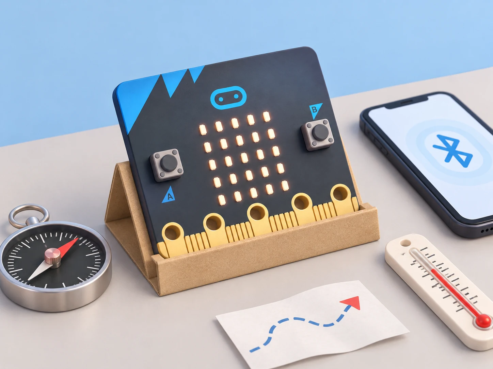

Micro:bit: brúixola, temperatura, tacte i Bluetooth
Llegir el rumb i la temperatura aproximada, provar el logotip tàctil de V2 i distingir Bluetooth de ràdio.
🌱 Situació, repte i intenció
- Calibrar la brúixola i comparar rumbs amb una referència.
- Contrastar la temperatura interna aproximada amb un termòmetre.
- Distingir l’entrada tàctil de V2 i la connexió Bluetooth de la ràdio.
🎯 Aprenentatges i vocabulari
- Magnetòmetre/brúixola integrada: rumb i calibratge, amb interferències identificades.
- Sensor tèrmic intern: lectura aproximada, no termòmetre ambiental calibrat.
- Logotip tàctil capacitiu i funcions de so només en micro:bit V2; V1 no incorpora aquestes peces.
- Bluetooth per a connexió amb dispositius compatibles, diferenciat de la ràdio local entre plaques.
🧰 Materials i preparació
- Placa BBC micro:bit i ordinador amb MakeCode o editor compatible.
- Brúixola i termòmetre de referència; tots dos poden ser analògics.
- Dispositiu compatible amb Bluetooth i editor/app adient, si la connexió està disponible.
- Portapiles opcional per a separar la placa de l’ordinador.
Comproveu la versió impresa a la placa. La brúixola pot requerir calibratge i es pot veure afectada per imants, altaveus, taules metàl·liques o cables amb corrent. El sensor tèrmic és dins del processador i només dona una aproximació de la temperatura de la placa/entorn.
📅 Seqüència didàctica
Calibreu i compareu el rumb
Desenvolupament del pas
Obriu un programa que mostre el rumb de la brúixola en graus. Seguiu la indicació de calibratge del dispositiu i feu la prova lluny d’imants, ordinadors i superfícies metàl·liques. Orienteu la placa cap a quatre direccions marcades amb una brúixola de referència; registreu diferències aproximades i repetiu una lectura després de girar la placa. No interpreteu el valor com una direcció fiable si la lectura oscil·la.
Compareu la temperatura amb un instrument
Desenvolupament del pas
Mostreu la lectura de temperatura del micro:bit i del termòmetre de referència deixant-los uns minuts al mateix lloc, a l’ombra i sense tocar el processador. Registreu hora, ubicació general i valors, sense dades personals. Repetiu després de canviar de sala només si la temperatura s’ha estabilitzat. Expliqueu que la lectura deriva de la temperatura del xip i pot diferir de la temperatura de l’aire.
Proveu el logotip tàctil segons la versió
Desenvolupament del pas
En una micro:bit V2, programeu l’esdeveniment de tocar el logotip per mostrar una icona o alternar un estat. Proveu tocar, deixar anar i mantenir el contacte com a esdeveniments diferents si l’editor els ofereix. En V1, substituïu l’entrada per A/B o un pin tàctil extern adequat; no presenteu la placa V1 com si tinguera logotip sensible al tacte.
Distingiu Bluetooth de ràdio
Desenvolupament del pas
Seguiu la guia de connexió de l’editor i emparelleu la placa amb un dispositiu compatible. Envieu una lectura fictícia o un número de prova a la interfície disponible i comproveu si arriba. Compareu el procediment amb radio entre dues plaques: Bluetooth crea una connexió amb un dispositiu compatible, mentre que el bloc ràdio de MakeCode envia missatges entre plaques del grup. Si l’editor o el dispositiu no admeten la connexió, feu el diagrama de missatges en paper i anoteu-ho com a simulació.

🧪 Evidències i avaluació
Repetiu tres vegades quatre rumbs marcats i dues lectures tèrmiques en condicions anotades. A V2, compareu cinc intents de tacte i cinc de no tacte; en V1, registreu l’entrada alternativa utilitzada. Proveu la connexió Bluetooth una vegada amb dispositiu compatible i documenteu el resultat, o feu la simulació desconnectada. Si la brúixola canvia en acostar-la a un objecte, separeu l’objecte i repetiu abans de canviar el programa.
Preguntes per comprovar
- Què s’ha calibrat i quina font d’interferència heu descartat?
- Per què la temperatura del processador pot diferir de la temperatura de l’aire?
- Quines funcions requereixen micro:bit V2?
- Quina diferència observable hi ha entre emparellar per Bluetooth i enviar dades per ràdio?
✅ Evidències d’aprenentatge
- Guardeu el projecte, les taules de rumb i temperatura, els intents de tacte segons versió i un esquema de la connexió. La conclusió ha de separar mesura, aproximació i simulació, i enumerar les limitacions de calibratge, precisió i compatibilitat.
♿ Participació, accessibilitat i seguretat
Permeteu llegir els resultats en veu alta, en pantalla o en una taula impresa. El tacte és opcional i es pot substituir per A/B. No compartiu identificadors personals ni emparelleu dispositius sense seguir les normes digitals del centre; esborreu la connexió en acabar. No useu imants forts prop de la brúixola durant les proves.
🔗 Referents i adaptació
La vista general oficial de micro:bit descriu botons, brúixola, acceleròmetre, ràdio/Bluetooth, pins i les diferències de V2; la guia oficial de sensors documenta la temperatura aproximada i el logotip tàctil. Consulteu també la referència Bluetooth de MakeCode. El Bluetooth depén de l’editor/dispositiu compatible; el sensor intern de temperatura no és un instrument calibrat.